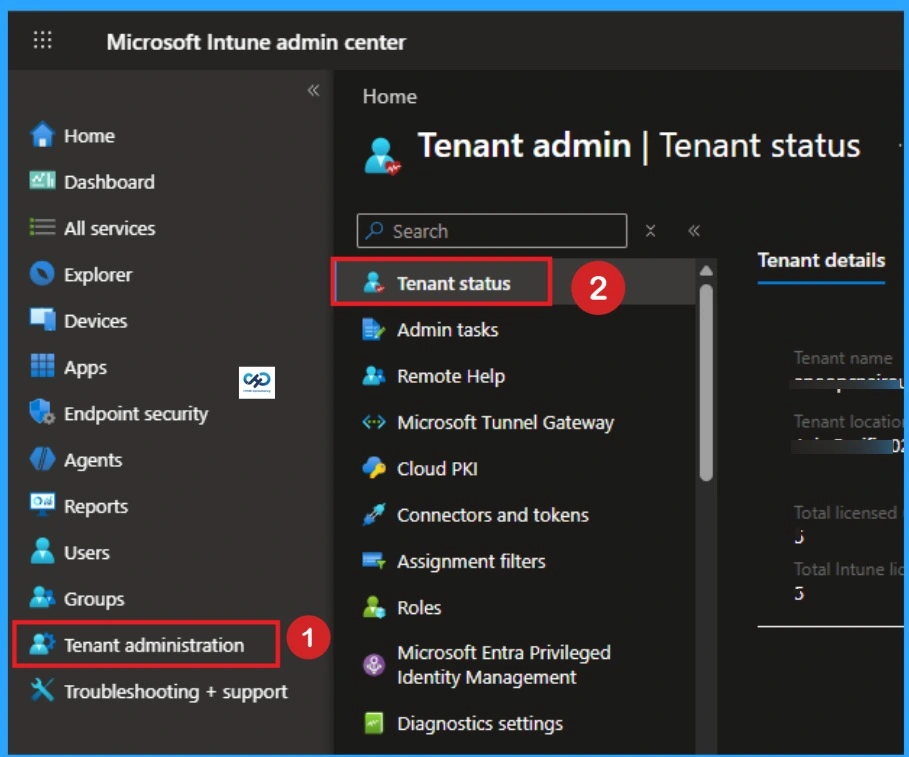
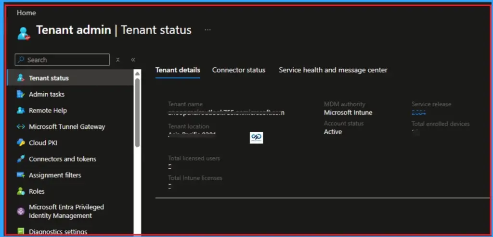
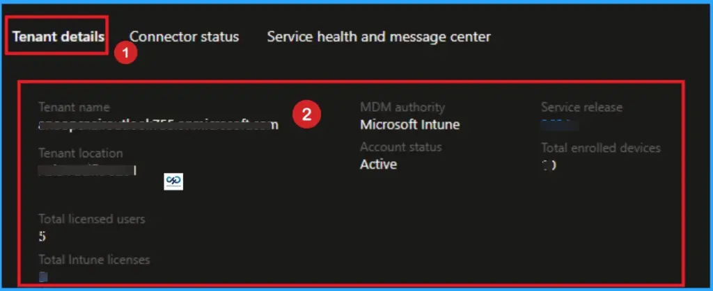
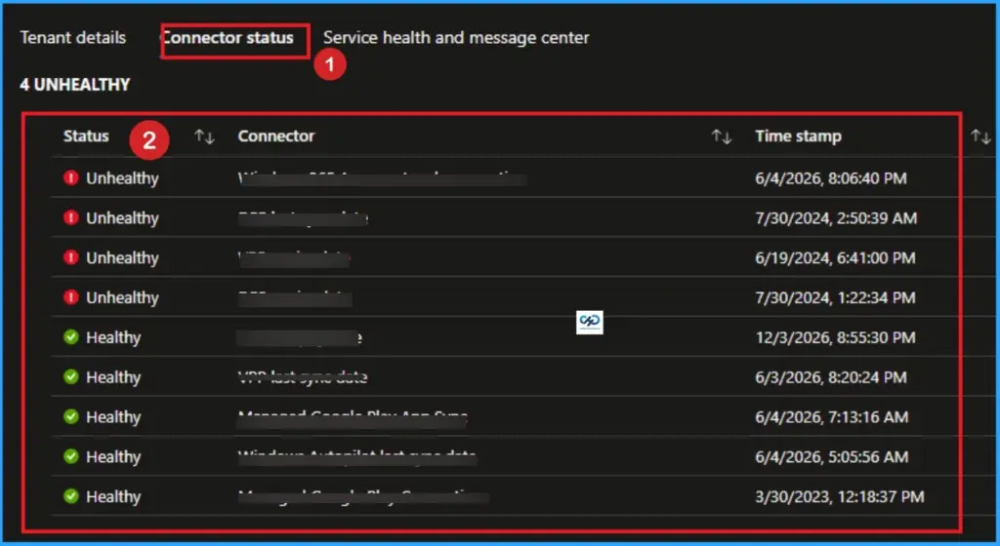
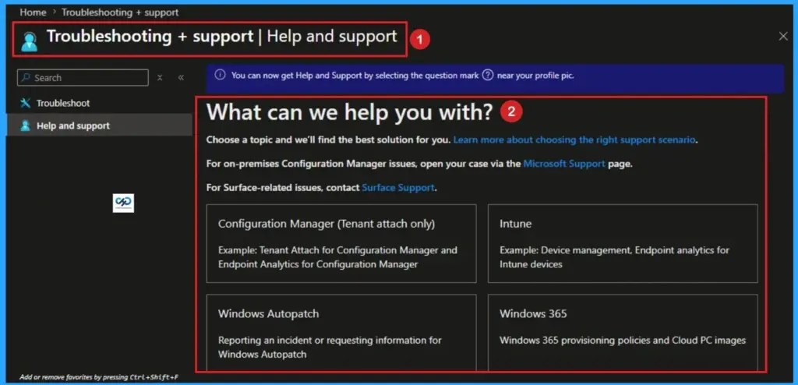
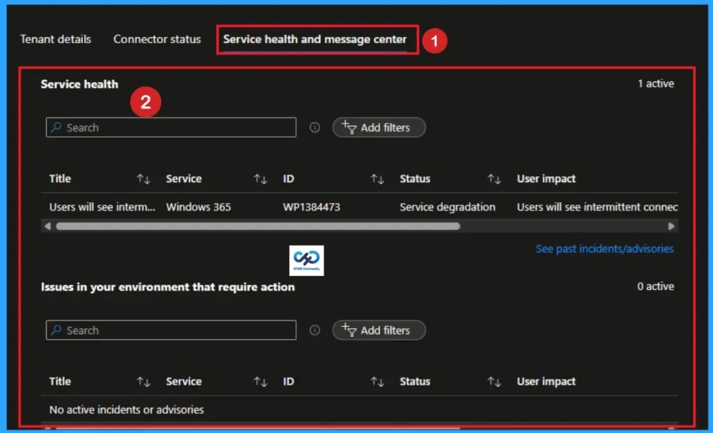
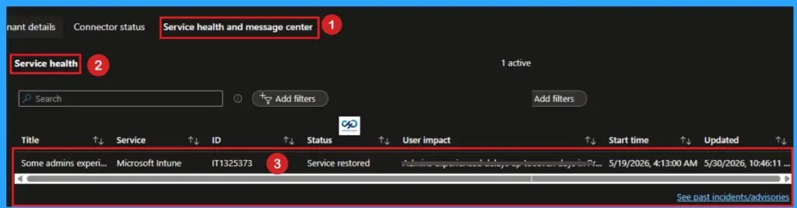
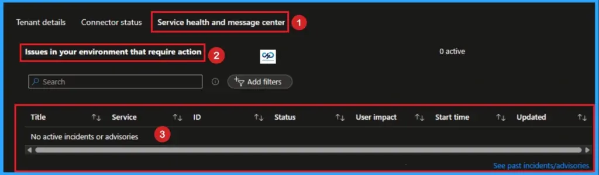
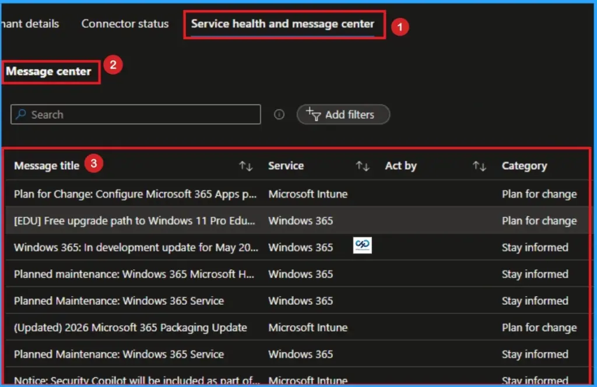
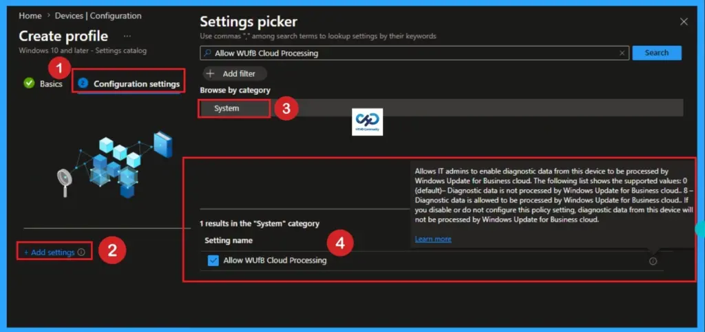

Key Takeaways:
- Provides visibility into the release version of your tenant
- Admins can confirm which Intune service release their tenant is currently on
- IT teams quickly verify if issues are tied to rollout delays or feature mismatches across tenants
- Ensuring compatibility with new features and troubleshooting scenarios
Let’s discuss how to get Release Version of the Intune Tenant from the Tenant Status Page. This blog post helps you to easily check your Microsoft Intune Tenant details within the Intune Portal. By knowing the version details, you can explore the new features in Microsoft Intune.
Table of Contents
How to Get Release Version of Intune Tenant from the Tenant Status Page
I often wondered why I didn’t have the newer features in my Intune console. Microsoft mentioned in the blog post that these features have been released. But those new Intune features are not available in my Intune. But those new Intune features are not available in my Intune? What is the Intune Tenant Status blade?
How to Find Intune Version Details in Intune Console?
You can easily find the Release version of Intune within the Intune Console. By finding your Intune Tenants version Details you can cross check with the current version of Intune. For this, Login on Intune Admin Center with your credentials. Then go to Tenant Administration > Tenant Status.

What Else Lives on the Tenant Status Page?
As you know, the Service Release version of Intune is just one piece of critical data located on this dashboard. When troubleshooting or verifying your ecosystem, you will look at three other main blocks on this page.
| Main Blocks | Details |
|---|---|
| MDM Authority | Confirms who manages your endpoints. For modern setups, this reads Microsoft Intune. For legacy hybrid environments, it might display Microsoft Configuration Manager (Tenant Attach/Co-management). |
| Tenant Location | Displays your physical data center cluster (e.g., North America 0501 or Asia Pacific 0201). This is crucial if you are troubleshooting regional network latency or confirming data residency compliance. |
| Connector Status | A quick-glance health monitor showing whether vital cloud handshakes such as your Apple Push Notification service (APNs) certificate, Volume Purchase Program (VPP) tokens, or Managed Google Play sync are Healthy, Warning, or Unhealthy. |

Tenant Details
On the Tenant Status page, firstly, you can see Tenant Details. It consolidates all the high-level metadata, organisational properties, and platform statuses that define your specific Intune cloud instance. It includes Tenant Name, Tenant Location, Total licensed users, MDM authority, Account status, Service release, etc.
- Tenant Name– This is the default domain name of your directory (e.g.,
yourcompany.onmicrosoft.com). It acts as the unique identifier for your cloud tenant. - Tenant Location: Shows the geographic region and specific data center cluster where your data is stored (e.g., North America 02, Europe 01). This is critical for data residency compliance and auditing.
- Total Licensed Users: The exact number of users in your Microsoft Entra ID who have been assigned an Intune license.
- Total Enrolled Devices: The live count of all devices (Windows, iOS, Android, macOS) that are actively managed by your tenant.
- MDM Authority: Indicates which service is authorized to manage your endpoints. For modern setups, this will always say Microsoft Intune. (Historically, this could display “Configuration Manager” or “Hybrid” during older SCCM integrations).
- Service Release: As discussed, this is the current YYMM software version running on your specific cluster (e.g.,
2605).

Connector Status
Connector Status Tab helps to acking the operational status of your external platform connections. If one of these fails, your ability to manage those specific device types breaks. The below table shows the more details of Connector Status.
| Connector Name | What It Tracks | Why It Matters |
|---|---|---|
| Android Enterprise | Your connection to the Managed Google Play Store. | Required to push apps and profiles to Android corporate and BYOD devices. |
| Apple Push Notification service (APNs) | The validity of your Apple push certificate. | If this certificate expires, you lose the ability to manage all iOS and macOS devices until renewed. |
| Apple Volume Purchase Program (VPP) | Token sync with Apple Business Manager (ABM). | Tracks your organization’s purchased app licenses for Apple devices. |
| Windows Autopilot | Sync status with the Autopilot deployment service. | Confirms hardware hashes are syncing correctly for out-of-box provisioning. |

Why Admins Use This Tab
You will rarely need to change things here, but you will consult this tab frequently for Tenant Migrations/Mergers. It Verifying exact tenant names and locations before moving users. License Audits it Comparing your Total Licensed Users against Total Enrolled Devices to optimize your licensing costs. Emergency Troubleshooting is Checking if an enrollment failure is a widespread issue (like an expired APNs token) or just an isolated device issue.

Service Health and Message Center
The Service Health and Message Center is the second major tab located within the Tenant Status page. this tab tells you how well the actual Microsoft cloud infrastructure is running and what backend changes are heading your way. It serves as your primary window into Microsoft’s engineering operations for Intune.

Service Health (Incidents & Advisories)
When a user calls saying they can’t enroll a device or sync an application, this should be your very first stop before you spend hours troubleshooting local configurations or device logs. This section displays live outages and degradations. Microsoft categorizes these into two severities:
- Incidents: Major, active service disruptions where functionality is completely broken for a portion of users or devices (e.g., “Admins are unable to save Profile configurations”).
- Advisories: Minor degradations or localized issues where the service is still operational, but performance might be degraded or a workaround is temporarily required.

Issues in your Environment that Require Action
This specific section acts as a tailored alert system from Microsoft’s Intune engineering team. It doesn’t track global cloud outages; instead, it highlights specific configurations inside your tenant that will cause breakage if ignored. Common alerts found here include:
- Upcoming expirations of vital infrastructure tokens (like your Apple APNs certificate, VPP tokens, or Managed Google Play connection).
- Deprecation warnings for legacy policies or configurations that you are actively using but must migrate to modern CSPs.

Intune Message Center
The Message Center is your look-ahead radar. Intune follows Microsoft’s Modern Lifecycle Policy, meaning changes are constant. Instead of jumping over to the main Microsoft 365 Admin Center, this section embeds the 10 most recent and active announcements tailored strictly to Microsoft Intune and Windows 365. Microsoft uses this space to announce.
- New Feature Rollouts: Confirms exactly when a newly announced capability has successfully hit your tenant cluster.
- Planned Maintenance: Gives a minimum 5-day heads-up for scheduled backend updates.
- Changes to Service Behavior: Typically posted 30 days in advance if a feature UI or underlying behavior is changing, giving you time to update internal documentation or train your helpdesk.
- End of Support Statements: Typically posted 90 days in advance when older operating system builds (like older versions of iOS or specific Windows 10/11 branches) will no longer be supported by the Intune agent.

The YYMM Naming Convention
Microsoft uses a strict YYMM format for all Intune service updates. It doesn’t use traditional software version numbering (like v10.4.2). The following are the current formate used by the Microsoft.
- 2604 = April 2026 Release
- 2605 = May 2026 Release
- 2606 = June 2026 Release
The Global Rollout Schedule (Why Tenants Differ)
Microsoft updates Intune through a 6-to-8-week development cadence called a sprint. Once a sprint concludes, the update isn’t pushed to every server simultaneously. To protect cloud infrastructure and catch unforeseen bugs early, updates are deployed using a rigid, multi-day regional phase structure.
| Day or Phase | Target Region or Environment |
|---|---|
| Phase 0 | Self-Host: Microsoft internal engineering tenants only. |
| Day 1 | Asia Pacific (APAC) tenants. |
| Day 2 | Europe, Middle East, and Africa (EMEA) tenants. |
| Day 3 | North America (AMER) tenants. |
| Day 4+ | Intune for Government (highly regulated GCC/High environments). |

Need Further Assistance or Have Technical Questions?
Join the LinkedIn Page and Telegram group to get the latest step-by-step guides and news updates. Join our Meetup Page to participate in User group meetings. Also, Join the WhatsApp Community and WhatsApp Channel to get the latest news on Microsoft Technologies. We are there on Reddit as well.
Author
Anoop C Nair has been Microsoft MVP from 2015 onwards for 10 consecutive years! He is a Workplace Solution Architect with more than 22+ years of experience in Workplace technologies. He is also a Blogger, Speaker, and Local User Group Community leader. His primary focus is on Device Management technologies like SCCM and Intune. He writes about technologies like Intune, SCCM, Windows, Cloud PC, Windows, Entra, Microsoft Security, Career, etc